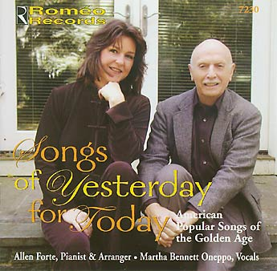

|

|
| . . . The songs are all classics, chosen with a view to both quality and variety by Allen Forte, who is the organizing force here. He made the arrangements, which are intelligent and sensitive, and his piano accompaniments are consistently expressive and brilliantly executed . . . . Roméo is to be commended for its superb production values, including excellent notes by Mr. Forte and the texts of each song. The recorded sound is superb. Henry Fogel FANFARE 28/6: 255 Allen Forte and Martha Bennett Oneppo have created a beautiful compilation of classic American popular songs. Selected with care from the Golden Age of songwriting, the collection is revelatory,the piano arrangements are fresh and transparent, and Ms. Oneppo’s vocal interpretations are romantic and deeply musical. There is much here to love, not only from a scholarly perspective, but even more from a lay appreciation of the beauty, wit and genius that combined to create our common national musical heritage. Maury Yeston, composer/lyricist/arranger The album “Songs of Yesterday” is a Sterling Compilation of “Golden Oldies” played and sung in a most beguiling manner with real artistry behind every note and pianistic roulade.(That the splendid pianist Allen Forte is a renowned Webern scholar adds a note of amazed amusement to the pleasures of the album). Martin Canin, The Juilliard School Allen Forte—long a fixture in academic musical life in the New Haven, CT, area (one does, after all, have to earn a living), and probably known to many of us—presents Roméo Records 7230, “Songs of Yesterday for Today: American Popular Songs of the Golden Age” . . . The piano stylings are a real pleasure—tasteful and fleet, with accompanimental support and accommodation and soloistic command in appropriate measure. . . . We have here an apt demonstration by an academic at the very peak of his game. One suspects that this was one of those things Prof. Forte had always wanted to do, and only now did the opportunity present itself. Summary: there is much both to enjoy and to learn here, particularly for fans of the era of popular song that gave us the so-called standards. Jonathan Bellman Chair, Dept. of Music History and Literature School of Music University of Northern Colorado |